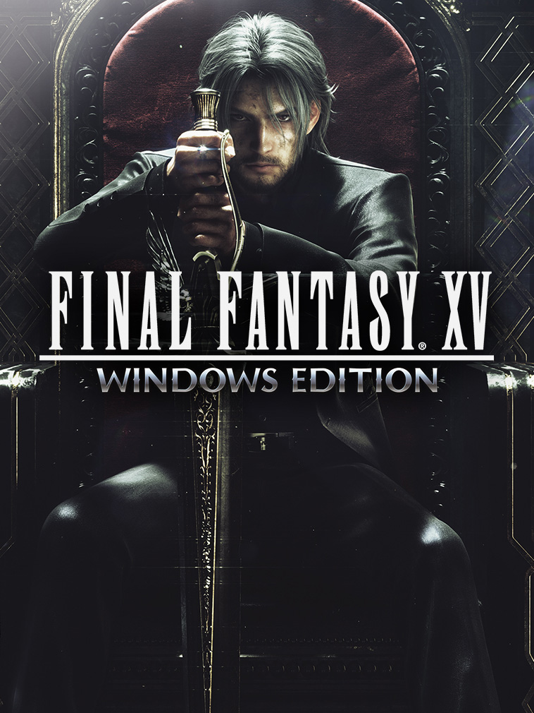

FINAL FANTASY XV WINDOWS EDITION
FINAL FANTASY XV WINDOWS EDITION
Details
|  | |
| Playtime | 1h 58m 0s |
| Last Activity | 04/06/2022 3:52:43 |
| Added | 23/11/2021 11:42:08 |
| Modified | 19/02/2023 4:48:22 |
| Completion Status | Played |
| Library | Steam |
| Source | Steam |
| Platform | PC (Windows) |
| Release Date | 06/03/2018 |
| Community Score | 65 |
| Critic Score | 91 |
| User Score | |
| Genre | Adventure Hack and slash/Beat 'em up Role-playing (RPG) |
| Developer | Square Enix |
| Publisher | Square Enix |
| Feature | Co-Operative Multiplayer Single Player |
| Links | Facebook Steam Official Website Wikia Wikipedia Youtube |
| Tag | [EMT] Logo Missing [EMT] Video Micro missing |
Description
FINAL FANTASY XV: EPISODE ARDYN
For the first time, players take control of Noctis's greatest foe in this brand-new episode of FINAL FANTASY XV! Delve into the dark tale of scorned saviour Ardyn Lucis Caelum and unravel the secrets surrounding his mysterious past.
*Players must purchase FINAL FANTASY XV in order to access this content. Updating to the latest version of the game may also be required.
FINAL FANTASY XV WINDOWS EDITION MOD ORGANIZER

FINAL FANTASY XV WINDOWS EDITION MOD ORGANIZER is a tool to help you make mods for the FINAL FANTASY XV WINDOWS EDITION. It allows you to convert your assets into mod data and incorporate them into the game world.
The main function of MOD ORGANIZER is building model data and uploading mods to Steam Workshop. It does not have the functionality for creating and editing assets such as 3D models. Please create assets with your own tools and output them in FBX format, which MOD ORGANIZER can then import.
Your mods can be uploaded to Steam Workshop if you have a Steam account, and then shared with the community. Subscribe to Steam Workshop's mod data to use the mods in the Steam version of FINAL FANTASY XV WINDOWS EDITION.
Bonus: Half-Life Pack

Bonus: Half-Life Pack – Available now through the Workshop for all FINAL FANTASY XV WINDOWS EDITION owners on Steam!
- Half-Life Costume (Main Game Exclusive)
Protective gear made at the Black Mesa Research Facility. - Crowbar (Main Game Exclusive)
Metallic tool that could prove quite useful in a pinch. - HEV Suit (COMRADES Exclusive)
Full outfit for the entire body, exclusive to COMRADES. Protective suit made at the Black Mesa Research Facility. - Scientist Glasses (COMRADES Exclusive)
Decorative accessory for the face, exclusive to COMRADES. Thick-rimmed black glasses that exude an air of quiet intelligence. - Crowbar (COMRADES Exclusive)
Metallic tool that could prove quite useful in a pinch. Exclusive to COMRADES.
Playable Demo Out Now!

Get a sneak peek into how it all starts with the demo version of FINAL FANTASY XV WINDOWS EDITION.
*Spec may differ from the product version.
Take the journey, now in ultimate quality. Boasting a wealth of bonus content and supporting Native4K(3840×2160px) ultra high-resolution graphical options and HDR 10, you can now enjoy the beautiful and carefully-crafted experience of FINAL FANTASY XV like never before.
*The main difference to the product version is that sub-quests have been disabled.
- The download size for the FINAL FANTASY XV WINDOWS EDITION PLAYABLE DEMO is 21GB. The High-Res 4K textures are included in this demo and are turned on or off automatically depending on your hardware specification.
- In the final product, High-Res 4K textures will be an optional download and can be toggled on or off by the user.
- Please visit here for more details on the recommended hardware needed to optimally use these textures.
The FINAL FANTASY XV WINDOWS EDITION PLAYABLE DEMO is a preview of the full game. We will continue to work on all aspects to ensure FFXV WINDOWS EDITION will be a great experience for PC gamers.
FINAL FANTASY XV WINDOWS EDITION Benchmark

Reviews & Accolades
"A Must Have for RPG Fans!" - Gamezoom
"Final Fantasy XV: Windows Edition is the best version of the game." - Multiplayer it
"The attention to detail is astonishing" - Rock Paper Shotgun
"It looks stunning" - Tech Radar
"The ultimate way to play" - PC Invasion
FFXV WINDOWS EDITION 4K Resolution Pack

This pack allows you to enjoy FINAL FANTASY XV in high resolution.
Experience the world of FINAL FANTASY XV as you have never seen it before, with even more beautiful movie scenes and meticulously drawn characters and backgrounds.
About the Game

Get ready to be at the centre of the ultimate fantasy adventure, now for Windows PC.
Joined by your closest friends on the roadtrip of a lifetime through a breathtaking open world, witness stunning landscapes and encounter larger-than-life beasts on your journey to reclaim your homeland from an unimaginable foe.
In an action-packed battle system, channel the power of your ancestors to warp effortlessly through the air in thrilling combat, and together with your comrades, master the skills of weaponry, magic and team-based attacks.
Now realised with the power of cutting-edge technology for Windows PCs, including support for high-resolution displays and HDR10, the beautiful and carefully-crafted experience of FINAL FANTASY XV can be explored like never before.
KEY FEATURES:
Includes all of the exciting content released as part of continuous game updates (Chapter 13 alternate route, off-road Regalia customisation, character swap feature and more!). And comes with all of content released in the Season Pass - Episode Gladiolus, Episode Prompto, Multiplayer Expansion: Comrades, and Episode Ignis
Get ready to be at the centre of the ultimate fantasy adventure.
Main game:
- FINAL FANTASY XV
New Features:
- “Insomnia City Ruins: Expanded Map” – a new map that takes you right up to the end
- First Person Mode
- Armiger Unleashed
- Use of the Royal Cruiser has been unlocked, with new fishing spots and recipes
- Additional quest to acquire and upgrade the Regalia Type-D
- Additional Achievements
DLC:
- FFXV Episode Gladiolus
- FFXV Episode Prompto
- FFXV Episode Ignis
- FFXV MULTIPLAYER EXPANSION: COMRADES
- FFXV Booster Pack+
- FFXV Holiday Pack+
Bonus Items:
- [Weapon] Masamune (FFXV Original Model)
- [Weapon] Mage Mashers (FFIX Model)
- [Weapon] Blazefire Saber XV (FFXV Original Color)
- [Weapon] Gae Bolg (FFXIV Model)
- [Regalia Decal] Platinum Leviathan
- [Regalia Decal] 16-Bit Buddies
- [Regalia Decal] Cindymobile
- [Regalia Decal] Gold Chocobo
- [Outfit] Royal Raiment
- [Item] Travel Pack
- [Item] Camera Kit
- [Item] Angler Set
- [Item] Gourmand Set
----------------------------------------------------------------------------------------------
The following menu items have been deleted and the ONLINE CONTENT function has been discontinued as of 24 June 2020.
(Deleted Items)
MAIN MENU - ONLINE
OPTIONS - ONLINE CONTENT
(End of Service)
Ability to change the appearance of Noctis
Display function for other players’ avatar shadows
Player Treasure function
Official Treasure function
Player Photo function
Cross-platform play between the Steam version and the Origin version
Further, the problem with temporary movement instability during play has been fixed.